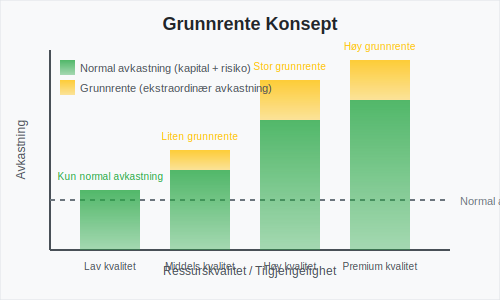
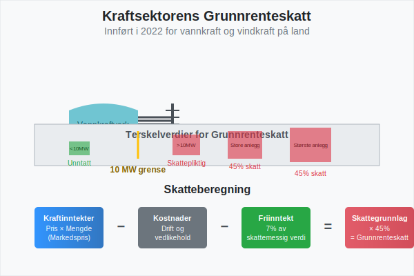
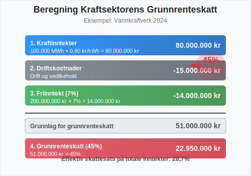
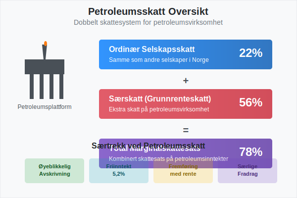
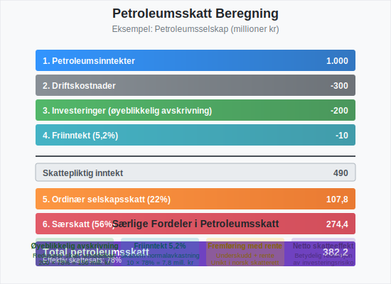
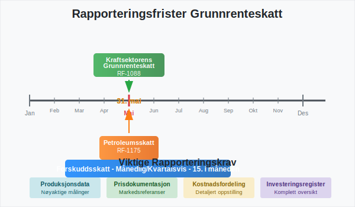

Grunnrenteskatt er en særskatt som pålegges virksomheter som utvinne eller utnytter naturressurser i Norge. Denne skatten er designet for å sikre at samfunnet får en rimelig andel av den ekstraordinære avkastningen (grunnrenten) som oppstår fra utnyttelsen av landets naturressurser. Grunnrenteskatt er et komplekst skatteområde som krever grundig forståelse av både skattelovgivning og regnskapsføring.
Seksjon 1: Konseptet Grunnrente og Grunnrenteskatt
1.1 Hva er Grunnrente?
Grunnrente er den ekstraordinære avkastningen som oppstår når naturressurser utnyttes kommersielt. Dette er avkastning utover det som er nødvendig for å kompensere for normal risiko og kapitalavkastning. Grunnrenten oppstår fordi naturressurser er begrenset og ofte har ulike kvaliteter og tilgjengelighet.

Grunnrenten kan oppstå fra:
- Lokasjonelle fordeler: Ressurser som er lettere tilgjengelige eller har lavere utvinningskostnader
- Kvalitetsforskjeller: Ressurser av høyere kvalitet som gir bedre pris eller lavere behandlingskostnader
- Markedsforhold: Høye priser på råvarer som gir ekstraordinær lønnsomhet
- Teknologiske fordeler: Effektive utvinnings- eller produksjonsmetoder
1.2 Formålet med Grunnrenteskatt
Grunnrenteskatt har flere viktige formål:
- Ressursfordeling: Sikre at samfunnet får en rimelig andel av verdiskapingen fra fellesskapets naturressurser
- Effektivitet: Opprettholde incentiver for effektiv ressursutnyttelse
- Stabilitet: Skape forutsigbare inntekter for staten fra naturressurssektorer
- Rettferdighet: Sikre at ekstraordinær avkastning fra naturressurser kommer samfunnet til gode
Seksjon 2: Grunnrenteskatt i Kraftsektoren
2.1 Kraftsektorens Grunnrenteskatt - Oversikt
Grunnrenteskatt for kraftproduksjon ble innført i Norge i 2022 og pålegges vannkraftprodusenter. Skatten er utformet for å fange opp grunnrenten i kraftsektoren, som har oppstått som følge av høye kraftpriser og gunstige naturforhold.

2.2 Hvem Omfattes av Kraftsektorens Grunnrenteskatt?
Grunnrenteskatt for kraftproduksjon gjelder for:
- Vannkraftanlegg med installert effekt over 10 MW
- Vindkraftanlegg på land med installert effekt over 10 MW
- Kraftprodusenter som eier eller driver slike anlegg
Følgende er unntatt fra grunnrenteskatt:
- Småkraftverk under 10 MW installert effekt
- Vindkraft til havs (omfattes av petroleumsskatteregimet)
- Kraftproduksjon til eget bruk under visse betingelser
2.3 Beregning av Kraftsektorens Grunnrenteskatt
Grunnrenteskatt for kraftproduksjon beregnes som følger:
Grunnlag for grunnrenteskatt = Kraftinntekter - Fradragsberettigede kostnader - Friinntekt
| Komponent | Beskrivelse | Satser/Regler |
|---|---|---|
| Skattesats | Grunnrenteskatt | 45% |
| Friinntekt | Avkastning på investert kapital | 7% av skattemessig verdi |
| Kraftinntekter | Salg av kraft og relaterte tjenester | Markedspris × produsert mengde |
| Fradrag | Drifts- og vedlikeholdskostnader | Faktiske kostnader |

2.4 Friinntekt i Kraftsektoren
Friinntekten er et sentralt element som sikrer at normal avkastning på investert kapital ikke beskattes. Friinntekten beregnes som:
- 7% av skattemessig verdi av kraftanlegget
- Justeres årlig basert på avskrivninger og investeringer
- Kan fremføres dersom den ikke kan utnyttes fullt ut i inntektsåret
Seksjon 3: Petroleumsskatt (Særskatt)
3.1 Petroleumssektorens Særskatt - Oversikt
Petroleumssektoren i Norge er underlagt et særskilt skatteregime som inkluderer både ordinær selskapsskatt (22%) og særskatt (56%), som til sammen utgjør en marginalskattesats på 78%. Særskatten fungerer som en form for grunnrenteskatt for petroleumsvirksomhet.

3.2 Hvem Omfattes av Petroleumsskatt?
Petroleumsskatt gjelder for:
- Utvinning av petroleum på norsk kontinentalsokkel
- Rørledningstransport av petroleum
- Landanlegg som er en integrert del av petroleumsvirksomheten
- Kraftproduksjon til havs for petroleumsformål
3.3 Beregning av Petroleumsskatt
Petroleumsskattesystemet har flere særtrekk:
| Element | Ordinær Skatt | Særskatt | Total |
|---|---|---|---|
| Skattesats | 22% | 56% | 78% |
| Avskrivninger | Lineær over levetid | Øyeblikkelig | - |
| Friinntekt | Nei | Ja (5,2%) | - |
| Fremføring av underskudd | Ubegrenset | Med rente | - |

3.4 Særtrekk ved Petroleumsskatt
3.4.1 Øyeblikkelig Avskrivning
I petroleumssektoren kan alle investeringer avskrives øyeblikkelig for særskatteformål. Dette gir betydelige kontantstrømfordeler og reduserer investeringsrisikoen.
3.4.2 Friinntekt for Særskatt
Petroleumsselskaper får en friinntekt på 5,2% av investeringer som ikke er avskrevet for særskatteformål. Denne friinntekten kan fremføres med rente dersom den ikke kan utnyttes.
3.4.3 Fremføring med Rente
Underskudd i petroleumsvirksomhet kan fremføres med rente (statsobligasjonsrenten + 1 prosentpoeng), noe som er unikt i norsk skatterett.
Seksjon 4: Regnskapsføring av Grunnrenteskatt
4.1 Regnskapsmessig Behandling
Grunnrenteskatt behandles regnskapsmessig som en skattekostnad og følger de samme prinsippene som ordinær selskapsskatt for aksjeselskaper. Dette innebærer:
- Periodisering: Skatten kostnadsføres i det året den påløper
- Utsatt skatt: Forskjeller mellom regnskapsmessige og skattemessige verdier gir opphav til utsatt skatt
- Usikkerhet: Usikre skatteposisjoner må vurderes og eventuelt avsettes for
4.2 Praktisk Regnskapsføring
Typiske regnskapsposter for grunnrenteskatt:
Debet: Skattekostnad - Grunnrenteskatt
Kredit: Betalbar grunnrenteskatt
Debet: Utsatt skattefordel
Kredit: Utsatt skattekostnad - Grunnrenteskatt
4.3 Rapportering og Noteopplysninger
Selskaper som betaler grunnrenteskatt må gi omfattende noteopplysninger om:
- Skatteberegning: Hvordan grunnrenteskatt er beregnet
- Vesentlige estimater: Usikkerhet knyttet til skatteberegninger
- Endringer: Endringer i skattelovgivning og deres effekter
- Fremtidige forpliktelser: Forventede skattebetalinger
Seksjon 5: Rapportering og Compliance
5.1 Skattemeldinger og Frister
Selskaper som omfattes av grunnrenteskatt har særskilte rapporteringsforpliktelser:
| Skattetype | Skattemelding | Frist | Særlige Krav |
|---|---|---|---|
| Kraftsektorens grunnrenteskatt | RF-1088 | 31. mai | Produksjonsdata, kraftpriser |
| Petroleumsskatt | RF-1175 | 31. mai | Detaljerte kostnadsfordelinger |
| Forskuddsskatt | Månedlig/kvartalsvis | 15. i måneden | Estimerte betalinger |

5.2 Dokumentasjonskrav
Grunnrenteskatt krever omfattende dokumentasjon:
- Produksjonsdata: Nøyaktige målinger av produksjon og salg
- Kostnadsfordeling: Detaljert fordeling av kostnader mellom skattepliktige og ikke-skattepliktige aktiviteter
- Investeringsregister: Komplett oversikt over investeringer og avskrivninger
- Prisdata: Dokumentasjon av salgspriser og markedsreferanser
5.3 Internkontroll og Compliance
Effektiv internkontroll for grunnrenteskatt inkluderer:
- Systemer og prosesser: Robuste systemer for datainnsamling og beregning
- Kompetanse: Tilstrekkelig skattefaglig kompetanse internt eller eksternt
- Kvalitetssikring: Regelmessig gjennomgang og validering av skatteberegninger
- Oppdatering: Kontinuerlig oppfølging av regelverksendringer
Seksjon 6: Praktiske Eksempler og Beregninger
6.1 Eksempel: Kraftsektorens Grunnrenteskatt
Eksempel: Et vannkraftverk med følgende data for 2024:
- Kraftproduksjon: 100 GWh
- Gjennomsnittlig kraftpris: 80 øre/kWh
- Driftskostnader: 15 millioner kroner
- Skattemessig verdi av anlegg: 200 millioner kroner
Beregning:
Kraftinntekter: 100.000 MWh × 0,80 kr/kWh = 80.000.000 kr
Driftskostnader: 15.000.000 kr
Friinntekt (7%): 200.000.000 kr × 7% = 14.000.000 kr
Grunnlag for grunnrenteskatt:
80.000.000 - 15.000.000 - 14.000.000 = 51.000.000 kr
Grunnrenteskatt (45%):
51.000.000 × 45% = 22.950.000 kr
6.2 Eksempel: Petroleumsskatt
Eksempel: Et petroleumsselskap med følgende data:
- Petroleumsinntekter: 1.000 millioner kroner
- Driftskostnader: 300 millioner kroner
- Investeringer (øyeblikkelig avskrivning): 200 millioner kroner
- Friinntekt: 10 millioner kroner
Beregning:
Skattepliktig inntekt:
1.000 - 300 - 200 - 10 = 490 millioner kr
Ordinær selskapsskatt (22%):
490 × 22% = 107,8 millioner kr
Særskatt (56%):
490 × 56% = 274,4 millioner kr
Total petroleumsskatt:
107,8 + 274,4 = 382,2 millioner kr
Effektiv skattesats: 382,2/490 = 78%
Seksjon 7: Utfordringer og Kompleksitet
7.1 Regnskapsmessige Utfordringer
Grunnrenteskatt skaper flere regnskapsmessige utfordringer:
- Estimering: Usikkerhet knyttet til fremtidige kraftpriser og produksjon
- Periodisering: Korrekt periodisering av skattekostnader og -fordeler
- Utsatt skatt: Komplekse beregninger av utsatt skatt ved forskjeller mellom regnskaps- og skatteregler
- Valutaeffekter: For petroleumsselskaper med inntekter i utenlandsk valuta
7.2 Compliance-utfordringer
- Regelverksendringer: Hyppige endringer i skattelovgivning
- Kompleksitet: Høy grad av teknisk kompleksitet i beregninger
- Dokumentasjon: Omfattende dokumentasjonskrav
- Tidsfrister: Stramme frister for rapportering og betaling
7.3 Strategiske Betraktninger
Selskaper må vurdere:
- Investeringsbeslutninger: Hvordan grunnrenteskatt påvirker lønnsomheten av nye prosjekter
- Finansiering: Optimal kapitalstruktur under grunnrenteskatteregimet
- Risikostyring: Håndtering av skatterisiko og usikkerhet
- Organisering: Optimal organisering av virksomheten for skatteformål
Seksjon 8: Fremtidige Utviklingstrekk
8.1 Politiske Signaler
Grunnrenteskatt er et politisk sensitivt område med pågående diskusjoner om:
- Utvidelse: Mulig utvidelse til andre sektorer (f.eks. havvind, mineralutvinning)
- Satsjusteringer: Endringer i skattesatser basert på markedsforhold
- Tekniske justeringer: Forbedringer av regelverket basert på erfaringer
8.2 Teknologisk Utvikling
Teknologisk utvikling påvirker grunnrenteskatt gjennom:
- Digitalisering: Automatisering av rapportering og beregninger
- Nye teknologier: Hvordan nye energiteknologier skal behandles skattemessig
- Dataanalyse: Bedre muligheter for overvåking og kontroll
8.3 Internasjonale Trender
Norge følger internasjonale trender innen ressursbeskatning:
- OECD-retningslinjer: Internasjonale standarder for ressursbeskatning
- EU-regulering: Påvirkning fra EU-direktiver og konkurranseregler
- Bærekraft: Økende fokus på bærekraftig ressursutnyttelse
Konklusjon
Grunnrenteskatt representerer et komplekst, men viktig element i det norske skattesystemet. For virksomheter som omfattes av denne skatten, er det avgjørende å ha:
- Grundig forståelse av regelverket og beregningsmetoder
- Robuste systemer for datainnsamling og rapportering
- Kompetent rådgivning fra skattefaglige eksperter
- Proaktiv tilnærming til compliance og risikostyring
Grunnrenteskatt vil fortsette å være et sentralt element i norsk næringspolitikk, og virksomheter må være forberedt på fortsatte endringer og tilpasninger i regelverket. En systematisk tilnærming til regnskapsføring og rapportering av grunnrenteskatt er essensielt for å sikre compliance og optimal skatteposisjon.
For virksomheter som vurderer investeringer i sektorer som omfattes av grunnrenteskatt, er det viktig å inkludere skatteeffektene i budsjettering og lønnsomhetsanalyser fra tidlig fase.